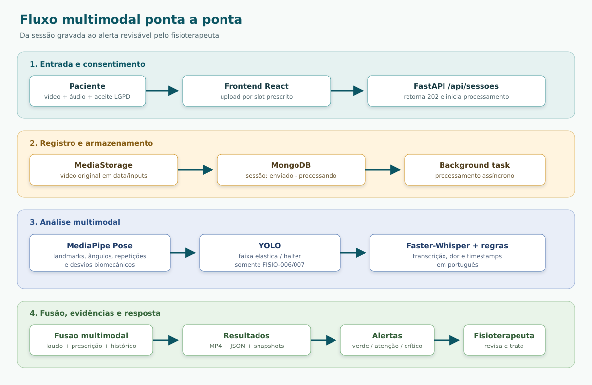

Curso: FIAP Pos-Tech IA para Devs
Projeto: Fisio Coach
Versao do relatorio: 1.0
Data: novembro de 2026
Repositorio: fiap-pos-ia-para-devs-fase4-tech-challenge
Este documento descreve a implementacao existente no repositorio. Quando um resultado quantitativo de acuracia ou latencia nao esta medido por benchmark versionado, o texto identifica a evidência como funcional/estrutural, sem apresentar numeros estimados como se fossem metricas experimentais.
O Fisio Coach e uma plataforma multimodal para apoio ao fisioterapeuta no acompanhamento remoto de sessoes de reabilitacao. A entrada principal e um video gravado pelo paciente, contendo imagem, movimento e, quando disponivel, a fala relacionada a dor. O sistema combina quatro fontes de informacao:
Os resultados sao persistidos em arquivos e MongoDB, apresentados em relatorios de sessao e evolucao, e convertidos em alertas com severidade verde, atencao ou critico. O frontend apresenta o video anotado, a linha do tempo de eventos, evidencias fotograficas e o painel de alertas.
A solucao atende diretamente ao nucleo de analise de video, audio, texto, anomalias e fusao multimodal. Ha uma diferenca importante em relacao ao enunciado: a implementacao atual usa Faster-Whisper local e um classificador deterministico de dominio, em vez de Azure Speech to Text e Azure Text Analytics. Essa decisao esta documentada nos ADRs e prioriza custo zero, reprodutibilidade e execucao local. A integracao Azure permanece como extensao planejada, e nao e apresentada neste relatorio como funcionalidade concluida.
O desafio da Fase 4 propoe integrar IA a processos medicos, analisando dados multimodais para identificar sinais precoces de risco e alertar a equipe. O recorte escolhido foi o acompanhamento de exercicios de fisioterapia, no qual o paciente grava uma sessao e o fisioterapeuta precisa verificar se o movimento foi executado conforme a prescricao.
O objetivo do Fisio Coach e reduzir o trabalho manual de revisao de sessoes, oferecendo ao profissional:
O sistema nao substitui avaliacao clinica. Ele produz sinais, medidas e evidencias para apoiar a decisao do fisioterapeuta.
O MVP suporta quatro exercicios:
| Codigo | Exercicio |
|---|---|
| FISIO-001 | Extensao de joelho sentado |
| FISIO-002 | Pendulo de ombro (Codman) |
| FISIO-006 | Abducao de ombro com elastico |
| FISIO-007 | Flexao de cotovelo com halter |
A aplicacao suporta cadastro de paciente, laudo, prescricao, upload por slot prescrito, processamento assincrono, relatorio individual, evolucao longitudinal e painel de alertas. O armazenamento de demonstracao usa dados sinteticos.
Nao fazem parte da implementacao atual:
O edital solicita repositorio Git, relatorio tecnico com fluxo multimodal, modelos aplicados e resultados/exemplos de anomalias, alem de video demonstrativo. Este arquivo e o relatorio tecnico do repositorio. O video de demonstracao deve ser publicado separadamente no YouTube ou Vimeo conforme a orientacao do edital; nenhum link e embutido aqui porque nao foi localizado um link publicado no estado atual do projeto.
| Entregavel ou requisito | Evidencia no projeto | Situacao |
|---|---|---|
| Repositorio com codigo-fonte | Backend FastAPI, frontend React/Vite, Docker Compose, testes e documentacao | Implementado |
| Fluxo multimodal | Pipeline de video, audio, texto clinico e evolucao | Implementado |
| Modelos de video | MediaPipe Pose, analisadores de exercicio e YOLO para equipamentos | Implementado |
| Modelos de audio | Faster-Whisper local e regras de classificacao de dor | Implementado com substituicao local |
| Resultados e exemplos de anomalias | Relatorios JSON, video anotado, telemetria, snapshots e alertas | Implementado |
| Alertas automaticos | Severidade e persistencia em alertas, painel web |
Implementado |
| Azure Speech to Text | Nao ha cliente Azure no codigo atual | Pendente |
| Azure Text Analytics | Nao ha cliente Azure no codigo atual | Pendente |
| Video de ate 15 minutos | Deve ser publicado como artefato externo | Link nao encontrado no repositorio |
A aplicacao e executada com Docker Compose em tres servicos principais:
O diretorio data e montado como armazenamento persistente para videos originais, videos anotados, snapshots e arquivos JSON.
O backend separa as responsabilidades entre routers REST, services, motor de pose, motor de audio, repositorios, armazenamento de midia e sinks de resultado. O processamento pode gravar simultaneamente em disco e banco por meio do CompositeResultSink.

A API retorna 202 Accepted para o processamento assincrono. O frontend consulta o status e atualiza o progresso ate a conclusao ou erro.
As principais colecoes MongoDB sao:
pacientes: dados cadastrais sinteticos;laudos: regiao, lesao, restricoes e limites angulares;planos: dias, exercicios, series, repeticoes, lado, equipamento e dor maxima;sessoes: status, metadados, metricas, consentimento e referencias de midia;eventos: repeticoes, desvios, evidencias e falas relacionadas a dor;alertas: severidade, justificativa, status e vinculo com paciente/sessao.Cada execucao tambem pode produzir:
annotated.mp4: video com esqueleto, HUD, eventos e equipamento;analysis.json: resumo executivo estruturado;telemetry.json: serie temporal de medidas;evidence/*.jpg: quadros que comprovam desvios.O MediaPipe Pose extrai 33 landmarks corporais. As coordenadas sao normalizadas e usadas para calcular angulos e distancias por geometria 2D. O pipeline identifica o lado ativo automaticamente quando o exercicio permite, considerando visibilidade e amplitude observada.
A deteccao de repeticoes usa uma maquina de estados com fases de repouso, movimento concentrico, pico e movimento excentrico. Interpolacao de gaps e suavizacao reduzem o impacto de oclusoes momentaneas e ruido. A histerese evita que oscilacoes proximas do limiar sejam contadas como repeticoes adicionais.
O padrao Strategy permite que cada exercicio implemente seus angulos primarios e suas regras de desvio sem duplicar o pipeline comum. Os quatro analisadores ativos ficam registrados em um catalogo de exercicios.
O detector baseado em YOLO usa o modelo best.pt para reconhecer os equipamentos relevantes nos exercicios FISIO-006 e FISIO-007:
faixa_elastica;halter.O resultado e associado aos frames e agregado no relatorio. O HUD mostra a caixa e o status do equipamento; a ausencia ou baixa cobertura pode gerar um achado de execucao.
A trilha de audio e extraida e convertida para mono, 16 kHz, com reducao de ruido e normalizacao. O Faster-Whisper realiza a transcricao local em portugues. O resultado preserva timestamps para a fusao temporal com repeticoes e desvios.
A classificacao de dor e deterministica e orientada ao dominio. As categorias sao:
pouca_ou_nenhuma_dor;desconforto;dor;muita_dor.As regras consideram termos e precedencia de negacao para reduzir classificacoes falsas em frases como “nao estou com dor”. O resultado nao e um modelo clinico de sentimento geral; e um classificador explicavel para relatos de dor e desconforto.
O extrator clinico interpreta laudo e prescricao em portugues para obter campos estruturados, como regiao anatomica, lesao, movimentos restritos, limites angulares, dias de tratamento, exercicios, series, repeticoes e dor maxima aceitavel.
Esses dados funcionam como contexto para avaliar se uma sessao esta dentro da prescricao. A mesma medida biomecanica pode ser aceitavel para um paciente e gerar alerta para outro, dependendo do limite registrado.
A avaliacao longitudinal organiza as sessoes por dia, exercicio, serie e repeticao. Os indicadores principais sao:
As regras de alerta combinam violacao de limite angular, compensacao, repeticao invalida, dor acima do limite e tendencia desfavoravel na evolucao. A severidade e traduzida em verde, atencao ou critico, com justificativa persistida para permitir revisao humana.
Os exemplos abaixo representam os tipos de achado gerados pela implementacao e seus artefatos de evidencia. Eles descrevem o comportamento funcional e nao devem ser interpretados como estatistica de desempenho clinico.
Quando o angulo calculado ultrapassa o limite do laudo ou fica fora da faixa prescrita, o evento recebe referencia temporal, exercicio, repeticao e evidencia fotografica. O relatorio pode indicar a amplitude observada, o limite aplicavel e a recomendacao de revisao pelo fisioterapeuta.
Evidencia produzida: evento em eventos, registro em analysis.json, quadro em evidence/*.jpg e marcador no video anotado.
Os analisadores verificam regras especificas do exercicio, como inclinacao de tronco, assimetria, movimento de segmento nao desejado ou falha da fase esperada. O achado e vinculado ao ciclo ou frame em que ocorreu.
Resposta do sistema: a repeticao pode ser marcada como invalida, o motivo aparece na timeline e a severidade e recalculada para o resumo da sessao.
Uma fala transcrita como “estou com muita dor” e associada ao timestamp do audio. O segmento passa a compor a timeline multimodal e pode elevar o risco quando supera a dor maxima definida na prescricao.
Resposta do sistema: o evento fala_dor e persistido, aparece junto ao player e pode alimentar alerta atencao ou critico, conforme a regra configurada.
Nos exercicios com faixa elastica ou halter, o detector verifica a presenca do objeto. A cobertura temporal e o status sao agregados no relatorio. Um resultado inconsistente e uma evidencia para revisao da sessao, sem afirmar sozinho que o movimento foi clinicamente incorreto.
Se a amplitude diminui, a consistencia cai ou a dor aumenta ao longo dos dias, o servico de evolucao registra a tendencia e gera alerta para o painel do fisioterapeuta. O alerta mantem a justificativa e a relacao com as sessoes que o originaram.
O upload exige aceite explicito de consentimento por sessao. A demonstracao utiliza dados sinteticos e mantem as midias separadas por identificador de execucao. O sistema foi desenhado como apoio a decisao, com justificativas e evidencias para revisao profissional, sem automatizar diagnostico.
Na raiz do repositorio:
sh start_app.sh
Ou diretamente:
docker compose -f docker-compose.yaml up -d --build
Acessos:
http://localhost:8080http://localhost:3000/docshttp://localhost:3000/api/healthmongodb://localhost:27017Para encerrar ou reiniciar:
sh stop_app.sh
sh restart_app.sh
O backend requer Python >=3.11,<3.13 e usa uv no fluxo documentado:
cd backend
uv sync
uv run pytest tests -v
A suite cobre transcricao, dataset, geometria, repeticoes, analisadores, processador de video, YOLO, HUD, armazenamento de midia, progresso, APIs de sessao, pacientes, evolucao e alertas. Os arquivos de configuracao do repositorio declaram 147 testes automatizados.
uv run ./backend/src/cli/analyze_video.py \
--video /caminho/para/video.mp4 \
--case FISIO-001 \
--side auto \
--target-reps 5 \
--run-id sessao_teste_01
Para cada caso, o resultado deve ser inspecionado junto com o video anotado, o JSON executivo, a telemetria e as evidencias. A interpretacao clinica continua sendo responsabilidade do profissional.
cd frontend
npm ci
npm run build
npm run dev
O repositorio contem:
api.http;Isso comprova a existencia do fluxo implementado e permite uma demonstracao reproduzivel. Nao substitui, porem, uma avaliacao de acuracia contra ground truth clinico.
Para uma validacao experimental completa, recomenda-se registrar:
Essas metricas nao sao declaradas neste documento porque nao ha protocolo anotado e resultado versionado no repositorio atual.
best.pt.O edital cita Azure Speech to Text e Azure Text Analytics. A equipe avaliou essa alternativa, mas decidiu nao depender de recursos Azure na versao demonstrativa por uma combinacao de restricoes de custo, infraestrutura, privacidade e reproducibilidade. Essa escolha esta registrada nos ADRs 0010 (Faster-Whisper), 0011 (deteccao de dor por transcricao) e 0012 (extracao de laudos e prescricoes).
docker compose up, sem criar conta, provisionar recurso, cadastrar endpoint ou configurar chave de API. Os modelos e regras locais permitem repetir a demonstracao com a mesma entrada e o mesmo contrato de dados.int8. Isso evita GPU dedicada, CUDA e custos de instancias de GPU na nuvem.| Necessidade | Recurso local | Motivo da escolha |
|---|---|---|
| Landmarks e postura | MediaPipe Pose | Roda em CPU, possui wheel Python, 33 landmarks e licenca permissiva; evita a dependencia de CUDA e a compilacao complexa do OpenPose (ADR 0001). |
| Equipamentos | YOLO com best.pt |
Detecta apenas faixa_elastica e halter nos exercicios FISIO-006 e FISIO-007, em CPU, sem chamada externa (ADR 0009). |
| Transcricao | Faster-Whisper local | Mantem audio e timestamps no ambiente local, sem custo por requisicao, rede ou credenciais (ADR 0010). |
| Dor na fala | Regras deterministicas sobre a transcricao | E explicavel, reproduzivel e adequado ao vocabulario restrito da demonstracao; nao exige um classificador clinico ou NLP em nuvem (ADR 0011). |
| Laudo e prescricao | clinical_extractor.py + revisao humana |
Extrai campos em portugues sem serviço pago e permite correcao pelo fisioterapeuta antes de salvar (ADR 0012). |
| Persistencia e execucao | MongoDB, Docker Compose e armazenamento em data/ |
Mantem a stack local, auditavel e reproduzivel, sem depender de banco ou armazenamento gerenciado. |
“Gratuito” neste contexto significa sem tarifa de servico por requisicao e baseado em componentes locais/open source ou em artefatos do proprio projeto. Isso nao elimina custos de hardware, energia, armazenamento ou manutencao, nem representa uma afirmacao de que todos os componentes possuem a mesma licenca.
A decisao reduz escalabilidade e pode aumentar a latencia em CPU em comparacao com uma API cloud. O Whisper local tambem pode errar em ruido, sotaques e falas sobrepostas; as regras de dor nao compreendem toda nuance clinica; e o extrator de laudos cobre apenas o vocabulario mapeado. Por isso, os resultados sao apoio a decisao, nao diagnostico, e precisam de validacao com dados anotados e profissionais de saude antes de uso clinico.
A decisao local nao fecha a porta para Azure. Para atender integralmente ao requisito do edital em uma futura implantacao, recomenda-se criar portas de transcricao e analise de linguagem com duas implementacoes:
As credenciais devem permanecer em variaveis de ambiente e nunca no frontend ou no repositorio. O resultado dos dois adaptadores deve manter o mesmo contrato interno de segmentos, timestamps, texto e classificacao, permitindo trocar o provedor sem alterar o frontend nem a persistencia.
A arquitetura de anomalias deve ganhar um modulo de series temporais para batimentos, pressao e oxigenacao, com janela, baseline individual e regras de ausencia/outlier. O modulo deve compartilhar o contrato de alerta, mas permanecer separado do analisador biomecanico.
O video exigido pelo edital deve mostrar, em ate 15 minutos:
O Fisio Coach entrega uma implementacao funcional de acompanhamento multimodal para fisioterapia: processa video e audio, interpreta contexto textual, gera evidencias, persiste resultados e transforma anomalias em alertas revisaveis. A arquitetura separa API, services, motores de IA, persistencia e apresentacao, permitindo evolucao incremental.
O principal ponto de conformidade parcial e a camada de servicos Azure, substituida na versao atual por processamento local documentado. Essa limitacao esta explicitada para que o avaliador diferencie o que foi implementado do que permanece como evolucao. Dentro do recorte de fisioterapia e com dados sinteticos, o projeto oferece o fluxo tecnico necessario para demonstrar analise multimodal, deteccao de anomalias e apoio ao acompanhamento clinico.
README.mddocs/edital-tech-challenge-fase4.mddocs/arquitetura/arquitetura-do-sistema.mddocs/arquitetura/adrs/backend/src/services/pose/backend/src/services/audio_transcription.pybackend/src/services/clinical_extractor.pybackend/src/services/evolution_service.pybackend/tests/frontend/src/docker-compose.yamlapi.http